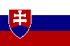

|
Länderinformationen Slowakei
1. Das Wichtigste auf einen Blick2. Sehens- und Hörenswertes
3. Politik & Gesellschaft
4. Schmeckenswertes
5. Medien
6. Reisetipps
1. Wissenswertes
|  | Hier
haben wir die wichtigsten Zahlen und Fakten zur Slowakei (Slovensko)
und der slowakischen Sprache zusammengetragen. |
 Die
slowakische Sprache
Die
slowakische Sprache
Slowakisch (slovenčina) gehört zu den slawischen Sprachen. Die slawischen Sprachen werden unterteilt in die ostslawische (Russisch, Weißrussisch und Ukrainisch), in die südslawische (Bulgarisch, Mazedonisch, Slowenisch und Serbokroatisch) und in die westslawische Sprachfamilie. Zu dieser letztgenannten gehört neben Tschechisch und Polnisch auch die slowakische Sprache, die Sie gerade mit diesem Sprachkurs erlernen. Die engste Verwandtschaft hat Slowakisch übrigens mit der tschechischen Sprache, mit der es zahlreiche Parallelen und Übereinstimmungen in Wortschatz und Grammatik teilt.
All diese slawischen Sprachen haben ihren Ursprung im Urslawischen, das – mit höchster Wahrscheinlichkeit – noch bis in die ersten Jahrhunderte unserer Zeitrechnung gesprochen wurde und das sich vor etwa 5000 Jahren als eigener Zweig aus dem Indogermanischen herausbildete.
Slowakisch wird heute von knapp sechs Millionen Menschen als Muttersprache gesprochen, wovon freilich der überwiegende Teil in der Slowakei lebt. Aber auch in den Nachbarländern Tschechien, Ungarn und Polen gibt es größere slowakischsprachige Bevölkerungsteile. In der Bundesrepublik Deutschland und in Österreich sowie vielen weiteren westeuropäischen Ländern gibt es einige zehntausend Menschen, die Slowakisch sprechen. Die größte Gruppe außerhalb der Slowakei findet sich jedoch in den Vereinigten Staaten, wo mehr als 500.000 Menschen Slowakisch als Muttersprache sprechen.
Die meisten Lehnwörter stammen im Slowakischen aus benachbarten slawischen Sprachen, aber auch aus dem Lateinischen und – gerade in jüngster Zeit – vor allem aus dem Englischen, die meist lediglich im Schriftbild an das slowakische Alphabet angeglichen werden (z.B. „komputer“).
Das Slowakische weist drei dialektale Hauptgruppen auf: mittel-, west- und
ostslowakische Dialekte. Die mittelslowakischen Dialekte bilden hierbei die Basis der modernen slowakischen Schriftsprache.
In der slowakischen Sprache wird das lateinische Alphabet verwendet – im Gegensatz zu einer Reihe anderer slawischer Sprachen, die mit kyrillischen Buchstaben geschrieben werden, wie beispielsweise Russisch und Ukrainisch.
Das slowakische Alphabet umfasst allerdings 46 Buchstaben (und Buchstabenkombinationen) wobei einige von ihnen eine besondere Form und eine andere Aussprache als im Deutschen aufweisen. Sehen Sie sich die folgende Tabelle an:
|
Das
slowakische Alphabet |
|||
|
a |
kurzes
a |
m |
wie
deutsches m |
|
á |
langes a |
n |
wie deutsches n |
|
ä |
kurzes ä/e |
ň |
weiches n
[nj-Laut], wie in Lasagne |
|
b |
wie deutsches b |
o |
kurzes o |
|
c |
wie deutsches z |
ó |
langes o |
|
č |
tsch, wie in
Tschechien |
uo (Diphthong), als
ein Laut betont |
|
|
d |
wie deutsches d |
p |
wie deutsches p |
|
ď |
weich betontes d
[dj-Laut] |
q |
wie deutsches q |
|
dz |
dz oder weich
betontes z |
r |
kurzes Zungen-r |
|
d¸ |
dsch, wie in
Dschungel |
ŕ |
langes Zungen-r |
|
e |
kurzes e |
s |
wie scharfes s in
Fuß |
|
é |
langes e |
š |
sch, wie in Schule |
|
f |
wie deutsches f |
t |
hartes t |
|
g |
wie deutsches g |
ť |
weiches t [tj-Laut] |
|
h |
wie deutsches h
(aber nie stumm) |
u |
kurzes u |
|
ch |
immer wie deutsches
ch in Buch |
ú |
langes u |
|
i |
kurzes i |
v |
wie w in Wind,
nach Vokal und vor Konsonant wie u
|
|
í |
langes i |
w |
wie deutsches w |
|
j |
wie deutsches j |
x |
wie deutsches x |
|
k |
wie deutsches k |
y |
wie kurzes i |
|
l |
hart betontes,
kurzes l |
ý |
wie langes i |
|
ĺ |
hart betontes,
langes l |
z |
wie stimmhaftes s
in summen |
|
ľ |
weich betontes l
[lj-Laut] |
¸ |
weiches sch, wie in
Bandage |
Neben dem Diphthong (Doppellaut) ô gibt es noch die Diphthonge ou, ia, ie und iu. Die Diphthonge, die Sie aus dem Deutschen kennen, werden im Slowakischen immer getrennt ausgesprochen, beispielsweise wird eu wie in Museum betont.
Slowakische Wörter werden grundsätzlich auf der ersten Silbe des Wortes betont.
Wie auch bei anderen slawischen Sprachen, unterscheidet man im Slowakischen sechs verschiedene Fälle: neben dem Nominativ, Genitiv, Dativ und Akkusativ gibt es hier auch den (nur in Verbindung mit bestimmten Präpositionen vorkommenden) Präpositiv und den Instrumental, der verwendet wird, wenn etwas durch oder mit etwas geschieht oder wenn bestimmte Präpositionen dabeistehen.
 Bevölkerung
Bevölkerung
Die Slowakische Republik hat etwas mehr als 5,4 Millionen Einwohner, also etwa so viel wie Dänemark oder Finnland und gehört hinsichtlich der Bevölkerung zu den kleineren Staaten der Europäischen Union.
Neben der slowakischstämmigen Bevölkerungsmehrheit (85%) gibt es im Land auch zahlreiche Minderheiten wie Ungarn (rund 10%), Roma (2%), Tschechen oder Ukrainer.
Das Durchschnittsalter der slowakischen Bevölkerung liegt bei rund 36 Jahren und ist damit um etwa 7 Jahre niedriger als das von Österreich oder Deutschland.
Die durchschnittliche Lebenserwartung liegt in der Slowakei bei 71 Jahren (Männer) und rund 79 Jahren (Frauen).
 Fläche
Fläche
Das slowakische Staatsgebiet umfasst knapp 49.000 km² und ist damit flächenmäßig in etwa so groß wie das Bundesland Niedersachsen. Die Bevölkerungsdichte liegt bei rund 110 Einwohnern pro km, wodurch es durchschnittlich etwa halb so stark besiedelt ist wie Deutschland.
 Währung
Währung
In der Slowakei wird mit der Slowakischen Krone (Slovenská koruna [Sk]) bezahlt. Diese ist unterteilt in 100 Heller (halierov). Einen tagesaktuellen Wechselkurs von Krone zum Euro finden Sie im Internet (geben Sie einfach bei einer Suchmaschine den Begriff „Währungsrechner“ ein) oder Sie erfragen diesen bei Ihrer Bank.
Die Einführung des Euro ist in der Slowakei für das Jahr 2009 geplant.
 Ökonomische
Situation
Ökonomische
Situation
Die Slowakei hat seit dem Ende der Ost-Westteilung und seit ihrer Unabhängigkeit im Jahr 1993 einen enormen wirtschaftlichen Transformationsprozess durchgemacht, bei dem die vormals staatlich gelenkte Planwirtschaft privatisiert und in eine marktwirtschaftliche Ökonomie gewandelt wurde. Seitdem erlebt das Land ein, wenngleich von einer relativ niedrigen Ausgangslage, beachtliches Wirtschaftswachstum. Die Nettolöhne liegen jedoch mit durchschnittlich rund 600 Euro im Monat (2007) deutlich unter dem EU-Schnitt. Ein Problem stellt nach wie vor das deutliche Ost-West-Gefälle im Land dar, mit einem vergleichsweise wohlhabenden Westteil – gerade in der Region um Bratislava – und einem ärmeren Ostteil. Zudem gibt es eine relativ hohe Arbeitslosenrate von rund 10%.
Der am schnellsten wachsende Wirtschaftssektor der Slowakei ist das Dienstleistungsgewerbe, das heute annähernd zwei Drittel des Bruttoinlandsprodukts erwirtschaftet. Aber auch der industrielle Sektor erlebt beachtliche Wachstumsraten – vor allem durch ausländische Investoren, die durch das vergleichsweise niedrige Lohnniveau angelockt werden. Hauptexportgüter des Landes sind Fahrzeuge, Maschinen und elektrische Geräte, Chemikalien, Kunststoff- und Metallprodukte sowie landwirtschaftliche Erzeugnisse.
Die slowakische Landwirtschaft produziert vorwiegend Getreide, Hopfen, Kartoffeln, Obst und Gemüse sowie forstwirtschaftliche Erzeugnisse. In der Viehzucht werden vornehmlich Schweine, Rinder und Geflügel gehalten.
Die wichtigsten Handelspartner der Slowakei sind Deutschland, mit dem fast ein Viertel des gesamten Auslandshandels abgewickelt wird, die Tschechische Republik, Österreich, Ungarn, Italien und Polen.
Aufgrund der wirtschaftlichen Entwicklung des Landes und den durchgeführten marktliberalen Reformen ist mit der Einhaltung des Euro-Stabilitätspaktes und der planmäßigen Einführung des Euro zum 1.1.2009 zu rechnen.
 Zeitzone
Zeitzone
Die Slowakei liegt in der selben Zeitzone wie Deutschland, Österreich oder die Schweiz. Wie auch bei uns, erfolgt im Frühling die Umstellung auf Sommerzeit.
Im nächsten Kapitel haben wir einige ausgesuchte Reiseempfehlungen zusammen gestellt.